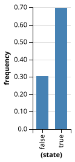

Chapter 2: Generative Models
2.1 Models, Simulation, and Degrees of Belief
One view of knowledge is that the mind maintains working models of parts of the world. ‘Model’ in the sense that it captures some of the structure in the world, but not all (and what it captures need not be exactly what is in the world—just what is useful). ‘Working’ in the sense that it can be used to simulate this part of the world, imagining what will follow from different initial conditions. As an example take the Plinko machine in Figure 1: a box with uniformly spaced pegs, with bins at the bottom. Into this box we can drop marbles:
The plinko machine is a ‘working model’ for many physical processes in which many small perturbations accumulate—for instance a leaf falling from a tree. It is an approximation to these systems because we use a discrete grid (the pegs) and discrete bins. Yet it is useful as a model: for instance, we can ask where we expect a marble to end up depending on where we drop it in, by running the machine several times—simulating the outcome.
Imagine that someone has dropped a marble into the plinko machine; before looking at the outcome, you can probably report how much you believe that the ball has landed in each possible bin. Indeed, if you run the plinko machine many times, you will see a shape emerge in the bins. The number of balls in a bin gives you some idea how much you should expect a new marble to end up there. This ‘shape of expected outcomes’ can be formalized as a probability distribution (described below). Indeed, there is an intimate connection between simulation, expectation or belief, and probability, which we explore in the rest of this section.
There is one more thing to note about our Plinko machine above: we are using a computer program to simulate the simulation. Computers can be seen as universal simulators. How can we, clearly and precisely, describe the simulation we want a computer to do?
2.2 Building Generative Models
We wish to describe in formal terms how to generate states of the world. That is, we wish to describe the causal process, or steps that unfold, leading to some potentially observable states. The key idea of this section is that these generative processes can be described as computations—computations that involve random choices to capture uncertainty about the process.
Programming languages are formal systems for describing what (deterministic) computation a computer should do. Modern programming languages offer a wide variety of different ways to describe computation; each makes some processes simple to describe and others more complex. However, a key tenet of computer science is that all of these languages have the same fundamental power: any computation that can be described with one programming language can be described by another. (More technically this Church-Turing thesis posits that many specific computational systems capture the set of all effectively computable procedures. These are called universal systems.)
In this book we will build on the JavaScript language, which is a portable and flexible modern programming language. The WebPPL language takes a subset of JavaScript and extends it with pieces needed to describe probabilistic computation. The key idea is that we have primitive operations that describe not only deterministic functions (like and) but stochastic operations.
For example, the flip function can be thought of as simulating a (possibly biased) coin toss (technically flip samples from a Bernoulli distribution, which we’ll return to shortly):
flip()Run this program a few times. You will get back a different sample on each execution. Also, notice the parentheses after flip. These are meaningful; they tell WebPPL that you are calling the flip function—resulting in a sample. Without parentheses flip is a function object—a representation of the simulator itself, which can be used to get samples.
In WebPPL, each time you run a program you get a sample by simulating the computations and random choices that the program specifies. If you run the program many times, and collect the values in a histogram, you can see what a typical sample looks like:
viz(repeat(1000, flip))Here we have used the repeat procedure which takes a number of repetitions, \[K\], and a function (in this case flip, note not flip()) and returns a list of \[K\] samples from that function. We have used the viz function to visualize the results of calling the flip function 1000 times. As you can see, the result is an approximately uniform distribution over true and false.
Using flip we can construct more complex expressions that describe more complicated sampling processes. For instance here we describe a process that samples a number adding up several flips (note that in JavaScript a boolean will be turned into a number, \[0\] or \[1\], by the plus operator +):
flip() + flip() + flip()What if we want to invoke this sampling process multiple times? We would like to construct a stochastic function that adds three random numbers each time it is called. We can use function to construct such complex stochastic functions from the primitive ones.
var sumFlips = function() {
return flip() + flip() + flip()
}
viz(repeat(100, sumFlips))A function expression with an empty argument list, function() {...}, is called a thunk: this is a function that takes no input arguments. If we apply a thunk (to no arguments!) we get a return value back, for example flip(). Complex functions can also have arguments. Here is a stochastic function that will only sometimes double its input:
var noisyDouble = function (x) { return flip() ? x+x : x }
noisyDouble(3);By using higher-order functions we can construct and manipulate complex sampling processes. We use the ternary operator condition ? if-true : if-false to induce hierarchy. A good example comes from coin flipping…
2.2.1 Example: Flipping Coins
The following program defines a fair coin, and flips it 20 times:
var fairCoin = function() { return flip(0.5) ? 'h' : 't' }
viz(repeat(20, fairCoin))This program defines a “trick” coin that comes up heads most of the time (95%), and flips it 20 times:
var trickCoin = function() { return flip(0.95) ? 'h' : 't' }
viz(repeat(20, trickCoin))The higher-order function make-coin takes in a weight and outputs a function (a thunk) describing a coin with that weight. Then we can use make-coin to make the coins above, or others.
var makeCoin = function (weight) {
return function() { return flip(weight) ? 'h' : 't' }
}
var fairCoin = makeCoin(0.5)
var trickCoin = makeCoin(0.95)
var bentCoin = makeCoin(0.25)
viz(repeat(20, fairCoin))
viz(repeat(20, trickCoin))
viz(repeat(20, bentCoin))We can also define a higher-order function that takes a “coin” and “bends it”:
var makeCoin = function (weight) {
return function() { return flip(weight) ? 'h' : 't' }
}
var bend = function (coin) {
return function() {
return coin() == 'h' ? makeCoin(0.7)() : makeCoin(0.1)()
}
}
var fairCoin = makeCoin(0.5)
var bentCoin = bend(fairCoin)
viz(repeat(100, bentCoin))Make sure you understand how the bend function works! Why are there an “extra” pair of parentheses after each make-coin statement?
Higher-order functions like repeat, map, and apply can be quite useful. Here we use them to visualize the number of heads we expect to see if we flip a weighted coin (weight = 0.8) 10 times. We’ll repeat this experiment 1000 times and then use viz to visualize the results. Try varying the coin weight or the number of repetitions to see how the expected distribution changes.
var makeCoin = function (weight) {
return function() { return flip(weight) }
}
var coin = makeCoin(0.8)
var data = repeat(1000, function() { return sum(repeat(10, coin)) })
viz(data, {xLabel: '# heads'})2.2.2 Example: Causal Models in Medical Diagnosis
Generative knowledge is often causal knowledge that describes how events or states of the world are related to each other. As an example of how causal knowledge can be encoded in WebPPL expressions, consider a simplified medical scenario:
var lungCancer = flip(0.01)
var cold = flip(0.2)
var cough = cold || lungCancer
coughThis program models the diseases and symptoms of a patient in a doctor’s office. It first specifies the base rates of two diseases the patient could have: lung cancer is rare while a cold is common, and there is an independent chance of having each disease. The program then specifies a process for generating a common symptom of these diseases – an effect with two possible causes: The patient coughs if they have a cold or lung cancer (or both).
Here is a more complex version of this causal model:
var lungCancer = flip(0.01)
var TB = flip(0.005)
var stomachFlu = flip(0.1)
var cold = flip(0.2)
var other = flip(0.1)
var cough =
(cold && flip(0.5)) ||
(lungCancer && flip(0.3)) ||
(TB && flip(0.7)) ||
(other && flip(0.01))
var fever =
(cold && flip(0.3)) ||
(stomachFlu && flip(0.5)) ||
(TB && flip(0.1)) ||
(other && flip(0.01))
var chestPain =
(lungCancer && flip(0.5)) ||
(TB && flip(0.5)) ||
(other && flip(0.01))
var shortnessOfBreath =
(lungCancer && flip(0.5)) ||
(TB && flip(0.2)) ||
(other && flip(0.01))
var symptoms = {
cough: cough,
fever: fever,
chestPain: chestPain,
shortnessOfBreath: shortnessOfBreath
}
symptomsNow there are four possible diseases and four symptoms. Each disease causes a different pattern of symptoms. The causal relations are now probabilistic: Only some patients with a cold have a cough (50%), or a fever (30%). There is also a catch-all disease category “other”, which has a low probability of causing any symptom. Noisy logical functions—functions built from and (&&), or (||), and flip—provide a simple but expressive way to describe probabilistic causal dependencies between Boolean (true-false valued) variables.
When you run the above code, the program generates a list of symptoms for a hypothetical patient. Most likely all the symptoms will be false, as (thankfully) each of these diseases is rare. Experiment with running the program multiple times. Now try modifying the var statement for one of the diseases, setting it to be true, to simulate only patients known to have that disease. For example, replace var lungCancer = flip(0.01) with var lungCancer = true. Run the program several times to observe the characteristic patterns of symptoms for that disease.
2.3 Prediction, Simulation, and Probabilities
Suppose that we flip two fair coins, and return the list of their values:
[flip(), flip()]How can we predict the return value of this program? For instance, how likely is it that we will see [true, false]? A probability is a number between 0 and 1 that expresses the answer to such a question: it is a degree of belief that we will see a given outcome, such as [true, false]. The probability of an event \[A\] (such as the above program returning [true, false]) is usually written as: \[P(A)\].
A probability distribution is the probability of each possible outcome of an event. For instance, we can examine the probability distribution on values that can be returned by the above program by sampling many times and examining the histogram of return values:
var randomPair = function() { return [flip(), flip()] }
viz.hist(repeat(1000, randomPair), 'return values')We see by examining this histogram that [true, false] comes out about 25% of the time. We may define the probability of a return value to be the fraction of times (in the long run) that this value is returned from evaluating the program – then the probability of [true, false] from the above program is 0.25.
2.3.1 Distributions in WebPPL
An important idea is that flip can be thought of in two different ways. From one perspective, flip is a procedure which returns a sample from a fair coin. That is, it’s a sampler or simulator. As we saw above we can build more complex samplers by building more complex functions. From another perspective, flip is itself a characterization of the probability distribution over true and false. In order to make this view explicit, WebPPL has a special type of distribution objects. These are objects that can be sampled from using the sample operator, and that can explicitly return the probability of a return value using the score method. Distributions are made by a family of distribution constructors:
//make a distribution using the Bernoulli constructor:
var b = Bernoulli({p: 0.5})
//sample from it with the sample operator:
print( sample(b) )
//compute the log-probability of sampling true:
print( b.score(true) )
//visualize the distribution:
viz(b)In fact flip(x) is just a helper function that constructs a Bernoulli distribution and samples from it. The function bernoulli(x) is an alias for flip. There are many other distribution constructors built into WebPPL listed here (and each has a sampling helper, named in lower case). For instance the Gaussian (also called Normal) distribution is a very common distribution over real numbers:
//create a gaussian distribution:
var g = Gaussian({mu: 0, sigma: 1})
//sample from it:
print( sample(g) )
//can also use the sampling helper (note lower-case name):
print( gaussian(0,1) )
//and build more complex processes!
var foo = function() { return gaussian(0,1) * gaussian(0,1) }
foo()2.3.2 Constructing Marginal Distributions: Infer
Above we described how complex sampling processes can be built as complex functions, and how these sampling processes implicitly specify a distribution on return values (which we examined by sampling many times and building a histogram). This distribution on return values is called the marginal distribution, and the WebPPL Infer operator gives us a way to make this implicit distribution into an explicit distribution object:
//a complex function, that specifies a complex sampling process:
var foo = function() { return gaussian(0, 1) * gaussian(0, 1) }
//make the marginal distributions on return values explicit:
var d = Infer({method: 'forward', samples: 1000}, foo)
//now we can use d as we would any other distribution:
print( sample(d) )
viz(d)Note that Infer took an object describing how to construct the marginal distribution (which we will describe more later) and a thunk describing the sampling process, or model, of interest. For more details see the Infer documentation.
Thus sample lets us sample from a distribution, and build complex sampling processes by using sampling in a program; conversely, Infer lets us reify the distribution implicitly described by a sampling process.
When we think about probabilistic programs we will often move back and forth between these two views, emphasizing either the sampling perspective or the distributional perspective. With suitable restrictions this duality is complete: any WebPPL program implicitly represents a distribution and any distribution can be represented by a WebPPL program; see e.g., (Ackerman2011?) for more details on this duality.
2.4 The Rules of Probability
While Infer lets us build the marginal distribution for even very complicated programs, we can also derive these marginal distributions with the “rules of probability”. This is intractable for complex processes, but can help us build intuition for how distributions work.
2.4.1 Product Rule
In the above example we take three steps to compute the output value: we sample from the first flip(), then from the second, then we make a list from these values. To make this more clear let us re-write the program as:
var A = flip()
var B = flip()
var C = [A, B]
CWe can directly observe (as we did above) that the probability of true for A is 0.5, and the probability of false from B is 0.5. Can we use these two probabilities to arrive at the probability of 0.25 for the overall outcome C = [true, false]? Yes, using the product rule of probabilities: The probability of two random choices is the product of their individual probabilities. The probability of several random choices together is often called the joint probability and written as \[P(A,B)\]. Since the first and second random choices must each have their specified values in order to get [true, false] in the example, the joint probability is their product: 0.25.
We must be careful when applying this rule, since the probability of a choice can depend on the probabilities of previous choices. For instance, we can visualize the the exact probability of [true, false] resulting from this program using Infer:
var A = flip()
var B = flip(A ? 0.3 : 0.7)
Infer({method: 'forward', samples: 1000}, function() {
var A = flip()
var B = flip(A ? 0.3 : 0.7)
return {'B': B, 'A': A}
})In general, the joint probability of two random choices \[A\] and \[B\] made sequentially, in that order, can be written as \[P(A,B) = P(A) P(B \vert A)\]. This is read as the product of the probability of \[A\] and the probability of “\[B\] given \[A\]”, or “\[B\] conditioned on \[A\]”. That is, the probability of making choice \[B\] given that choice \[A\] has been made in a certain way. Only when the second choice does not depend on (or “look at”) the first choice does this expression reduce to a simple product of the probabilities of each choice individually: \[P(A,B) = P(A) P(B)\].
What is the relation between \[P(A,B)\] and \[P(B,A)\], the joint probability of the same choices written in the opposite order? The only logically consistent definitions of probability require that these two probabilities be equal, so \[P(A) P(B \vert A) = P(B) P(A \vert B)\]. This is the basis of Bayes’ theorem, which we will encounter later.
2.4.2 Sum Rule
Now let’s consider an example where we can’t determine from the overall return value the sequence of random choices that were made:
flip() || flip()We can sample from this program and determine that the probability of returning true is about 0.75.
We cannot simply use the product rule to determine this probability because we don’t know the sequence of random choices that led to this return value. However we can notice that the program will return true if the two component choices are [true, true], or [true, false], or [false, true]. To combine these possibilities we use another rule for probabilities: If there are two alternative sequences of choices that lead to the same return value, the probability of this return value is the sum of the probabilities of the sequences. We can write this using probability notation as: \[P(A) = \sum_{B} P(A,B)\], where we view \[A\] as the final value and \[B\] as a random choice on the way to that value. Using the product rule we can determine that the probability in the example above is 0.25 for each sequence that leads to return value true, then, by the sum rule, the probability of true is 0.25+0.25+0.25=0.75.
Using the sum rule to compute the probability of a final value is called is sometimes called marginalization, because the final distribution is the marginal distribution on final values. From the point of view of sampling processes marginalization is simply ignoring (or not looking at) intermediate random values that are created on the way to a final return value. From the point of view of directly computing probabilities, marginalization is summing over all the possible “histories” that could lead to a return value. Putting the product and sum rules together, the marginal probability of return values from a program that we have explored above is the sum over sampling histories of the product over choice probabilities—a computation that can quickly grow unmanageable, but can be approximated by Infer.
2.5 Stochastic Recursion
Recursive functions are a powerful way to structure computation in deterministic systems. In WebPPL it is possible to have a stochastic recursion that randomly decides whether to stop. For example, the geometric distribution is a probability distribution over the non-negative integers. We imagine flipping a (weighted) coin, returning \[N-1\] if the first true is on the Nth flip (that is, we return the number of times we get false before our first true):
var geometric = function (p) {
return flip(p) ? 0 : 1 + geometric(p)
}
var g = Infer({method: 'forward', samples: 1000},
function() { return geometric(0.6) })
viz(g)There is no upper bound on how long the computation can go on, although the probability of reaching some number declines quickly as we go. Indeed, stochastic recursions must be constructed to halt eventually (with probability 1).
2.6 Persistent Randomness: mem
It is often useful to model a set of objects that each have a randomly chosen property. For instance, describing the eye colors of a set of people:
var eyeColor = function (person) {
return uniformDraw(['blue', 'green', 'brown'])
};
[eyeColor('bob'), eyeColor('alice'), eyeColor('bob')]The results of this generative process are clearly wrong: Bob’s eye color can change each time we ask about it! What we want is a model in which eye color is random, but persistent. We can do this using a WebPPL built-in: mem. mem is a higher order function that takes a procedure and produces a memoized version of the procedure. When a stochastic procedure is memoized, it will sample a random value the first time it is used with some arguments, but return that same value when called with those arguments thereafter. The resulting memoized procedure has a persistent value within each “run” of the generative model (or simulated world). For instance consider the equality of two flips, and the equality of two memoized flips:
flip() == flip()var memFlip = mem(flip)
memFlip() == memFlip()Now returning to the eye color example, we can represent the notion that eye color is random, but each person has a fixed eye color.
var eyeColor = mem(function (person) {
return uniformDraw(['blue', 'green', 'brown'])
});
[eyeColor('bob'), eyeColor('alice'), eyeColor('bob')]This type of modeling is called random world style (Mcallester2008?). Note that we don’t have to specify ahead of time the people whose eye color we will ask about: the distribution on eye colors is implicitly defined over the infinite set of possible people, but only constructed “lazily” when needed. Memoizing stochastic functions thus provides a powerful toolkit to represent and reason about an unbounded set of properties of an unbounded set of objects. For instance, here we define a function flipAlot that maps from an integer (or any other value) to a coin flip. We could use it to implicitly represent the \[n\]th flip of a particular coin, without having to actually flip the coin \[n\] times.
var flipAlot = mem(function (n) {
return flip()
});
[[flipAlot(1), flipAlot(12), flipAlot(47), flipAlot(1548)],
[flipAlot(1), flipAlot(12), flipAlot(47), flipAlot(1548)]]There are a countably infinite number of such flips, each independent of all the others. The outcome of each, once determined, will always have the same value.
In computer science memoization is an important technique for optimizing programs by avoiding repeated work. In the probabilistic setting, such as in WebPPL, memoization actually affects the meaning of the memoized function.
2.7 Example: Intuitive Physics
Humans have a deep intuitive understanding of everyday physics—this allows us to make furniture, appreciate sculpture, and play baseball. How can we describe this intuitive physics? One approach is to posit that humans have a generative model that captures key aspects of real physics, though perhaps with approximations and noise. This mental physics simulator could for instance approximate Newtonian mechanics, allowing us to imagine the future state of a collection of (rigid) bodies. We have included such a 2-dimensional physics simulator, the function runPhysics, that takes a collection of physical objects and runs physics ‘forward’ by some amount of time. (We also have animatePhysics, which does the same, but gives us an animation to see what is happening.) We can use this to imagine the outcome of various initial states, as in the Plinko machine example above:
var dim = function() { return uniform(5, 20) }
var staticDim = function() { return uniform(10, 50) }
var shape = function() { return flip() ? 'circle' : 'rect' }
var xpos = function() { return uniform(100, worldWidth - 100) }
var ypos = function() { return uniform(100, worldHeight - 100) }
var ground = {shape: 'rect',
static: true,
dims: [worldWidth, 10],
x: worldWidth/2,
y: worldHeight}
var falling = function() {
return {
shape: shape(),
static: false,
dims: [dim(), dim()],
x: xpos(),
y: 0}
};
var fixed = function() {
return {
shape: shape(),
static: true,
dims: [staticDim(), staticDim()],
x: xpos(),
y: ypos()}
}
var fallingWorld = [ground, falling(), falling(), falling(), fixed(), fixed()]
physics.animate(1000, fallingWorld);There are many judgments that you could imagine making with such a physics simulator. (Hamrick2011?) have explored human intuitions about the stability of block towers. Look at several different random block towers; first judge whether you think the tower is stable, then simulate to find out if it is:
var xCenter = worldWidth / 2
var ground = {
shape: 'rect',
static: true,
dims: [worldWidth, 10],
x: worldWidth/2,
y: worldHeight
}
var dim = function() { return uniform(10, 50) }
var xpos = function (prevBlock) {
var prevW = prevBlock.dims[0]
var prevX = prevBlock.x
return uniform(prevX - prevW, prevX + prevW)
}
var ypos = function (prevBlock, h) {
var prevY = prevBlock.y
var prevH = prevBlock.dims[1]
return prevY - (prevH + h)
}
var addBlock = function (prevBlock, isFirst) {
var w = dim()
var h = dim()
return {
shape: 'rect',
static: false,
dims: [w, h],
x: isFirst ? xCenter : xpos(prevBlock),
y: ypos(prevBlock, h)
}
}
var makeTowerWorld = function() {
var block1 = addBlock(ground, true)
var block2 = addBlock(block1, false)
var block3 = addBlock(block2, false)
var block4 = addBlock(block3, false)
var block5 = addBlock(block4, false)
return [ground, block1, block2, block3, block4, block5]
};
physics.animate(1000, makeTowerWorld())Were you often right? Were there some cases of ‘surprisingly stable’ towers? (Hamrick2011?) account for these cases by positing that people are not entirely sure where the blocks are initially (perhaps due to noise in visual perception). Thus our intuitions of stability are really stability given noise (or the expected stability marginalizing over slightly different initial configurations). We can realize this measure of stability as:
var listMin = function (xs) {
if (xs.length == 1) {
return xs[0]
} else {
return Math.min(xs[0], listMin(rest(xs)))
}
}
var ground = {
shape: 'rect',
static: true,
dims: [worldWidth, 10],
x: worldWidth/2,
y: worldHeight+6
}
var stableWorld = [
ground,
{shape: 'rect', static: false, dims: [60, 22], x: 175, y: 473},
{shape: 'rect', static: false, dims: [50, 38], x: 159.97995044874122, y: 413},
{shape: 'rect', static: false, dims: [40, 35], x: 166.91912737427202, y: 340},
{shape: 'rect', static: false, dims: [30, 29], x: 177.26195677111082, y: 276},
{shape: 'rect', static: false, dims: [11, 17], x: 168.51354470809122, y: 230}
]
var almostUnstableWorld = [
ground,
{shape: 'rect', static: false, dims: [24, 22], x: 175, y: 473},
{shape: 'rect', static: false, dims: [15, 38], x: 159.97995044874122, y: 413},
{shape: 'rect', static: false, dims: [11, 35], x: 166.91912737427202, y: 340},
{shape: 'rect', static: false, dims: [11, 29], x: 177.26195677111082, y: 276},
{shape: 'rect', static: false, dims: [11, 17], x: 168.51354470809122, y: 230}
]
var unstableWorld = [
ground,
{shape: 'rect', static: false, dims: [60, 22], x: 175, y: 473},
{shape: 'rect', static: false, dims: [50, 38], x: 90, y: 413},
{shape: 'rect', static: false, dims: [40, 35], x: 140, y: 340},
{shape: 'rect', static: false, dims: [10, 29], x: 177.26195677111082, y: 276},
{shape: 'rect', static: false, dims: [50, 17], x: 140, y: 230}
]
var doesTowerFall = function (initialW, finalW) {
var highestY = function (w) {
return listMin(map(function (obj) { obj.y }, w))
}
var approxEqual = function (a, b) {
return Math.abs(a - b) < 1.0
}
return !approxEqual(highestY(initialW), highestY(finalW))
}
var noisify = function (world) {
var perturbX = function (obj) {
var noiseWidth = 10
if (obj.static) {
return obj
} else {
return _.extend({}, obj, {x: uniform(obj.x - noiseWidth, obj.x + noiseWidth) })
}
}
return map(perturbX, world)
}
var run = function (world) {
var initialWorld = noisify(world)
var finalWorld = physics.run(1000, initialWorld)
return doesTowerFall(initialWorld, finalWorld)
}
viz(Infer({method: 'forward', samples: 100},
function() { return run(stableWorld) }))
viz(Infer({method: 'forward', samples: 100},
function() { return run(almostUnstableWorld) }))
viz(Infer({method: 'forward', samples: 100},
function() { return run(unstableWorld) }))
// uncomment any of these that you'd like to see for yourself
// physics.animate(1000, stableWorld)
// physics.animate(1000, almostUnstableWorld)
// physics.animate(1000, unstableWorld)2.8 Reading and Discussion
2.8.1 The Nature and Scope of Computational Models
Read Sec. 1.2 of Marr’s classic book Vision (Marr 1982). Marr points out that when we ask a question about the mind (e.g., “How does language work?”), there are at least three different interrelated levels we can answer that question. Marr’s three levels of analysis have become one of the key insights in the meta-science of the mind (that is, the science of conducting cognitive science), and we will be returning to them throughout the course.
Reading Questions:
Many neuroscientists argue that learning involves changing the structure of the synapses of neurons. Randy Gallistel has argued that other mechanisms may be involved as well. At which of Marr’s levels is this discussion happening?
Psychologists and artificial intelligence researchers both study the nature of intelligence. At which of Marr’s levels are their interests most likely to interact?
2.9 Exercises
Please complete the exercises on this page and submit them in PDF form. You can (and should!!) write your code here and click “Run” to test out your answers. However, you will need to transfer your code to your own document in order to turn in your answers and get feedback. THESE CODE BOXES WILL NOT SAVE YOUR WORK. So copy your answers over to your own document frequently.
Exercise 1
a)
Show mathematically that the marginal distribution on return values for these three programs is the same by directly computing the probability using the rules of probability (hint: write down each possible history of random choices for each program).
flip() ? flip(.7) : flip(.1)flip(flip() ? .7 : .1)flip(.4)b)
Check your answers by sampling from the programs, 1000 times each, and plotting the results.
c)
Write another new program with the same marginal distribution on return values that looks different from all of the above programs.
Exercise 2
a)
Explain why (in terms of the evaluation process) these two programs give different answers (i.e. have different distributions on return values).
var foo = flip()
display([foo, foo, foo])var foo = function() { return flip() }
display([foo(), foo(), foo()])b)
Modify the second program using mem so that it has the same distribution as the first program.
c)
Change the program in Part B so that the first two elements in the list are always the same as each other, but the third element can be different. Optional challenge: try to do this by adding only these 4 characters: x, 0, 0, and 1.
Exercise 3
a)
Which of these programs would be more likely to generate the following proportions for 100 values of C? Justify your response.

// Program "A"
var A = flip()
var B = flip(0.9)
var C = flip() ? A && B : A || B
display([A, B, C])// Program "B"
var A = flip(0.9);
var B = A && flip(0.9)
var C = B && flip(0.9)
display([A, B, C])b)
Could the program you did not choose in Part A have also generated those return values? Explain.
Exercise 4
In the simple medical diagnosis example, we imagined a generative process for diseases and symptoms of a single patient. In this exercise, we’ll write a version of that model that represents the diseases and symptoms of many patients.
a)
Let’s look at just two common conditions (a cold and allergies) and just two symptoms (sneeze and fever), and let’s assume that symptoms are deterministic.
var allergies = flip(0.3)
var cold = flip(0.2)
var sneeze = cold || allergies
var fever = cold
display([sneeze, fever])Under this model, what is the probability that the patient is sneezing? What is the probability that the patient is sneezing and has a fever?
b)
Inspect the joint probability distributions of sneeze and fever using Infer.
Infer({method: "forward", samples: 1000}, function() {
...
return { ... }
})c)
If we wanted to represent the diseases of many patients we might have tried to make each disease and symptom into a function from a person to whether they have that disease, like this:
var allergies = function(person) { return flip(.3) }
var cold = function(person) { return flip(.2) }
var sneeze = function(person) { return cold(person) || allergies(person) }
display([sneeze('bob'), sneeze('alice')])Add fever to the program above, and use Infer to inspect the probability distribution over Bob’s symptoms. Is this the same probability distribution that you computed for the single patient in Part A? If not, what can you do to fix this program to capture our intuitions correctly?
Exercise 5
Work through the evaluation process for the bend higher-order function in this example:
var makeCoin = function(weight) {
return function() {
return flip(weight) ? 'h' : 't'
}
}
var bend = function(coin) {
return function() {
return coin() == 'h' ? makeCoin(.7)() : makeCoin(.1)()
}
}
var fairCoin = makeCoin(.5)
var bentCoin = bend(fairCoin)a)
Directly compute the probability distribution of the bent coin in the example.
b)
Check your answer by using Infer.
Exercise 6
a)
Directly compute the probability that the geometric distribution defined by the following stochastic recursion returns the number 5. Hint: What is the default parameter for flip()?
var geometric = function() {
return flip() ? 0 : 1 + geometric()
}b)
Check your answer by using Infer.
Exercise 7
a)
Convert the following probability table to a compact WebPPL program:
| A | B | P(A,B) |
|---|---|---|
| F | F | 0.14 |
| F | T | 0.06 |
| T | F | 0.4 |
| T | T | 0.4 |
Requirement: fix the probability of A first and then define the probability of B to depend on whether A is true or not.
var a = ...
var b = ...
display([a, b])b)
Run your WebPPL program and use Infer to check that you get the correct distribution.
Exercise 8
Below we’ve defined a higher-order function flipSequence that takes a coin flipping function (e.g. trickCoin, below) and flips that coin until it gets a sequence of two heads in a row (in which case it returns heads 'h') or two tails in a row (in which case it returns tails 't'). Try out different weights for the trickCoin.
var makeCoin = function(weight) {
return function() {
return flip(weight) ? 'h' : 't'
}
}
var flipSequence = function(coin) {
return function() {
var flip1 = coin()
var flip2 = coin()
if (flip1 == flip2) {
return flip1
} else {
return flipSequence(coin)()
}
}
}
var trickCoin = makeCoin(.6)
var n_samples = 10000;
viz(Infer({method: "forward", samples: n_samples}, trickCoin))
viz(Infer({method: "forward", samples: n_samples}, flipSequence(trickCoin)))Part (a)
How does flipSequence change the distribution over return values (qualitatively)? Explain why requiring two flips in a row to be the same has this effect.
Part (b)
What would happen if a fair coin (with weight 0.5) were input to flipSequence? Explain.
Exercise 9
Box2D is a two dimensional simulation engine for simulating rigid bodies (those with constant shape). It allows for the construction of arbitray worlds and models important physical concepts including collisions, friction, gravity, momentum, and more.
We have provided a wrapper around Box2D that allows for the easy construction of worlds. A world consists of list of shapes. Shapes are created by JavaScript objects with the following properties:
|shape |“circle” or “rect” | |dims |[width, height] for rect or [radius] for circle | |x |x_position_as_number (distance from left) | |y |y_position_as_number (distance from top) | |static |boolean (does the object move or stay still?) | |velocity |[x_velocity, y_velocity] |
The variables worldWidth and worldHeight are constants representing the visible size of the simulation window.
Here’s an example with a ground and a single rectangle. Add another object to bowlingWorld and give it an initial velocity so that it knocks the original rectangle down.
var ground = {
shape: 'rect',
static: true,
dims: [worldWidth, 10],
x: worldWidth/2,
y: worldHeight
}
var rect = {
shape: 'rect',
static: false,
dims: [10, 100],
x: worldWidth/2,
y: 390
}
var bowlingWorld = [ground, rect]
physics.animate(1000, bowlingWorld)Exercise 10
In Example: Intuitive physics we modeled instability of a tower as the probability that the tower falls when perturbed, and we modeled “falling” as getting shorter. It would be reasonable to instead measure how much shorter the tower gets.
a)
Below, modify the stability/instability model by writing a continuous measure, towerFallDegree. Let this measure take different values between 0 and 1. That way, your continuous measure will be numerically comparable to the discrete measure, doesTowerFall (defined here as either 0 or 1). Explain what your continuous measure represents and why it might be a good continuous measure of instability.
///fold:
var listMin = function(xs) {
if (xs.length == 1) {
return xs[0]
} else {
return Math.min(xs[0], listMin(rest(xs)))
}
}
var highestY = function (w) { listMin(map(function(obj) { return obj.y }, w)) }
var ground = {
shape: 'rect',
static: true,
dims: [worldWidth, 10],
x: worldWidth / 2,
y: worldHeight + 6
}
var almostUnstableWorld = [
ground,
{shape: 'rect', static: false, dims: [24, 22], x: 175, y: 473},
{shape: 'rect', static: false, dims: [15, 38], x: 159.97995044874122, y: 413},
{shape: 'rect', static: false, dims: [11, 35], x: 166.91912737427202, y: 340},
{shape: 'rect', static: false, dims: [11, 29], x: 177.26195677111082, y: 276},
{shape: 'rect', static: false, dims: [11, 17], x: 168.51354470809122, y: 230}
]
var noisify = function (world) {
var perturbX = function (obj) {
var noiseWidth = 10
if (obj.static) {
return obj
} else {
return _.extend({}, obj, {x: uniform(obj.x - noiseWidth, obj.x + noiseWidth)})
}
}
map(perturbX, world)
}
///
// Returns height of tower
var getTowerHeight = function(world) {
return worldHeight - highestY(world)
}
var doesTowerFall = function (initialW, finalW) {
var approxEqual = function (a, b) { Math.abs(a - b) < 1.0 }
return 1 - approxEqual(highestY(initialW), highestY(finalW))
}
var towerFallDegree = function(initialW, finalW) {
...
}
var visualizeInstabilityMeasure = function(measureFunction) {
var initialWorld = noisify(almostUnstableWorld)
var finalWorld = physics.run(1000, initialWorld)
var measureValue = measureFunction(initialWorld, finalWorld)
print("Instability measure: " + measureValue)
print("Initial height: " + getTowerHeight(initialWorld))
print("Final height: " + getTowerHeight(finalWorld))
physics.animate(1000, initialWorld)
}
// Test binary doesTowerFall measure
// visualizeInstabilityMeasure(doesTowerFall)
// Test custom towerFallDegree measure
visualizeInstabilityMeasure(towerFallDegree)b)
Describe a tower with a very different doesTowerFall and towerFallDegree measures look like. Which measure captures the meaning of “unstable” better?